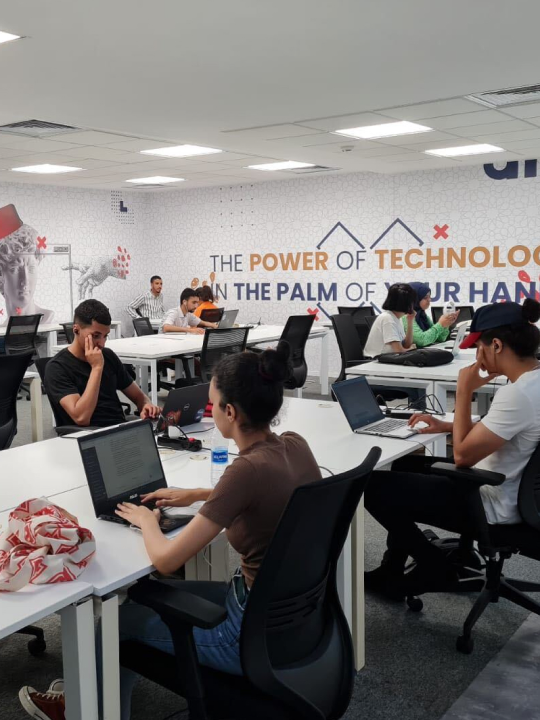
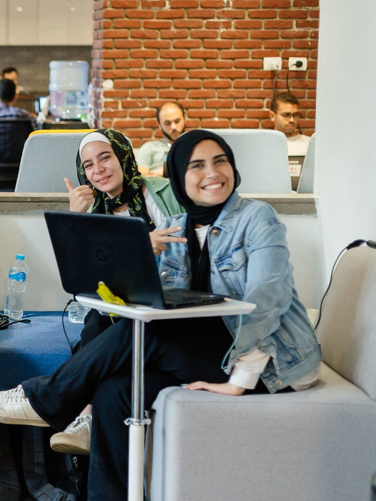
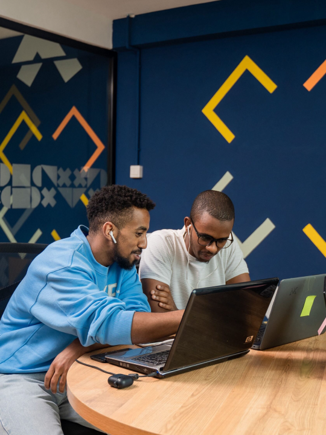
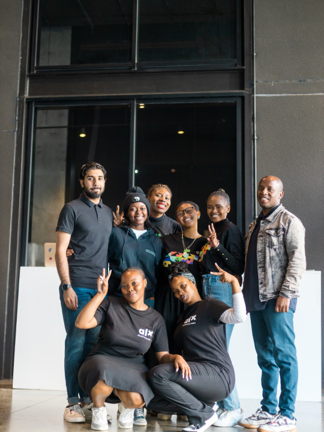
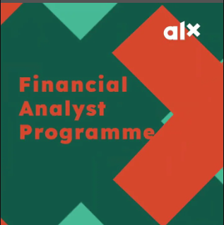
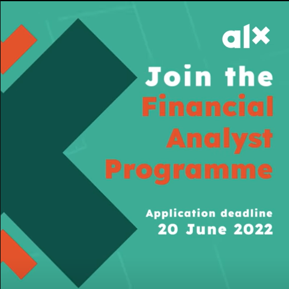
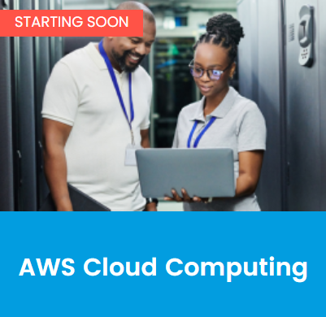
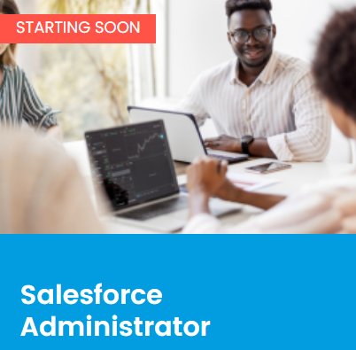

Tech Training for the Digital Future
Rigorous programmes. Real-world tech skills.
The ALX JourneyState-of-the-Art Infrastructure
Casablanca
Embrace the future of tech career development in Morocco.
Cairo
oin our community of like-minded individuals at our ALX Cairo Tech Labs.
Addis Ababa
Lideta CapStone Hub – Lideta Area Balcha Hospital Capstone Building, Addis Ababa
Johannesburg
The ALX Johannesburg Tech Hubs aim to equip South African youths with world-class digital skills that will help them in their careers.
quote section
The ALX community encouraged me to step out of my comfort zone, helped me stay on course and pushed me to explore new horizons. Looking back on my journey so far, I can say that enrolling in this program was one of the best decisions I've ever made.
Kareem Ahmed Farrag
Virtual and in-person infrastructure
Alx content
Cloud Practitioner
Unleash your future-proof career by becoming a Cloud Practitioner with ALXAfrica
LILIAN MOKAYA
8 min
Finance Analyst
Unleash your future-proof career by becoming a Finance Analyst with ALXAfrica
OURY DIALLO
8 min
Finance career
Step your career into finance
CHIBODO NYIRO
8 min
financial knowledge
Expand your financial knowledge
DIBORAH FALOPE
8 min
Learn Real World Skills to Transform Your Career
AWS Cloud Computing
As an Amazon Web Services (AWS) Academy member institution, ALX has access to the AWS Academy cloud computing curriculum.
Data Analytics
The ALX Data Analytics Programme is developed in partnership with ExploreAI, a leader in online Data Analytics education.
Salesforce Administratorg
The ALX Salesforce Administrator Programme is developed in partnership with Salesforce, the world’s leading customer relationship management (CRM) platform.
Software Engineering
Software Engineering Tech Plus is an exceptional Cohort we're doing this year where, besides your technical training, you'll get proper Job ready Soft Skills training. This Cohort is online with the benefit to access our learning hubs freely.
Register InterestF.A.Q.
How can I get in touch with ALX Africa to answer the questions I have?
Please ask LEA our Learning Experience Assistant for more information and answers to any additional questions.
What is ALX?
ALX offers job-ready training in the tech fields employers need most. ALX, in partnership with The ROOM, is brought to you by the organisation that leads African Leadership Academy, African Leadership University, and Anzisha Prize Foundation.
What is your selection process like?
The ALX Selection Process is a two-step online process. First applicants will be required to complete a registration form which will take a few minutes to complete. Once this has been submitted, applicants will be directed to our online application platform. The application will take approximately 90 mins to complete and consists of three sections; including an English proficiency test. Applicants will also receive access to the online application via email. Your link to the application is personal and therefore cannot be shared.
Am I able to go to the Hubs?
Attending the in-person hubs is a benefit of the ALX learning experience. The in-person co-working spaces are designed to provide accountability, peer support, and the opportunity for face-to-face interaction and networking. This is intended to boost productivity and help individuals achieve their goals.